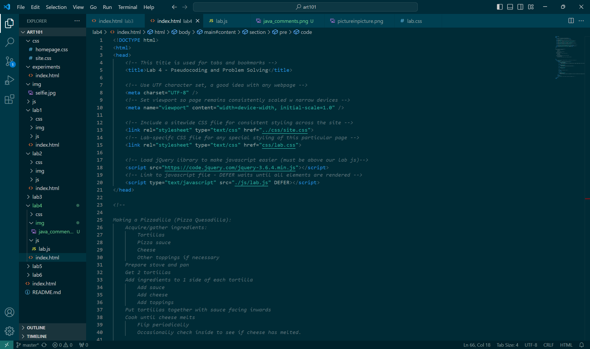

Lab 4 - Pseudocoding and Problem Solving
The Challenge
Make pseudocode outlines of an everyday task and a simple computer game. Then turn those outlines into comments.
Problems
What problems arose? How did you solve them?
Results

//Print the board before each turn
//Loop through each row
//Loop through each space
//Print X, O, or space
//Print a | in between
//Print a new line at the end
//Print a horizontal line in between
//Accept user input
//Ask user for input
//Proceed
//Validate user move
//Make error message if move is invalid
//Proceed normally if not
//Update the board (Add user’s icon: O)
//Evaluate possible moves
//Check columns if they have an empty space
//Mark columns with empty space valid
//Choose computer move
//Choose valid move
//Update the board (Add computer’s icon: X)
//Test for win or draw condition
//Win Condition: 4 icons are in a row horizontally, vertically, or diagonally
//Draw Condition: No more possible moves, and win condition isn’t reached.
Reflection
Put your reflections about this assignment here. How did it go? What kind of energy did you put into the assignment?